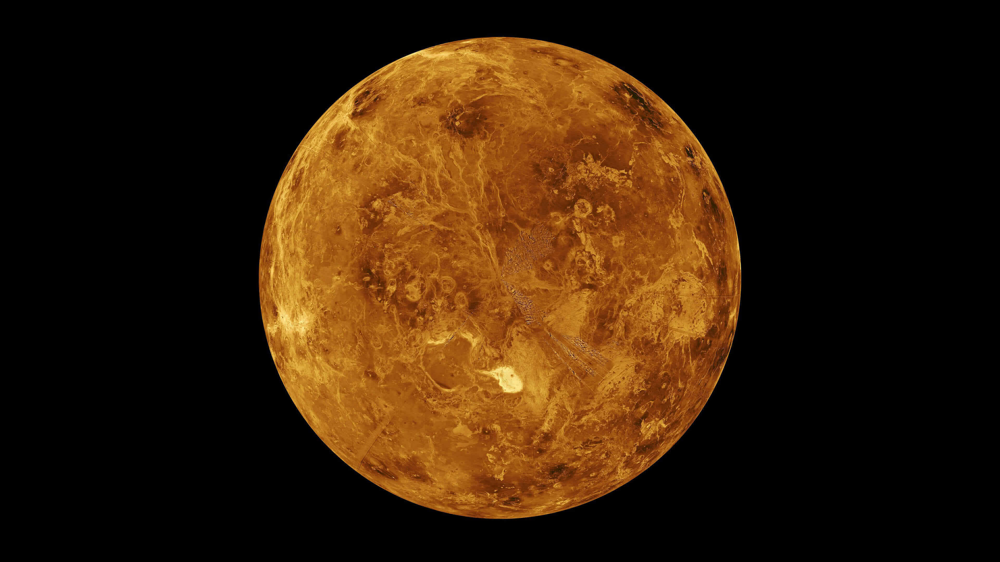

Venus
INFORMAȚII DESPRE PLANETA VENUS
Planeta Venus, a doua planetă de la soare,
are aceeași dimensiune ca Pământul.
Imaginile radar luate sub atmosfera sa
dezvăluie o varietate de munți și vulcani la
suprafața sa.
În afară de aceasta, cele două
planete sunt diametral opuse.
Venus este
un exemplu extrem de efect de seră
datorită atmosferei sale dense, otrăvitoare,
formată din nori de acid sulfuric.
Atmosfera pe Planeta Venus este sufocantă, mai fierbinte chiar şi decât Mercur. Pe suprafaţa lui Venus, temperatura medie
este de 465 grade Celsius. Presiunea la
suprafață vă va zdrobi şi vă va ucide la 92 de bari. De asemenea, Venus se rotește
constant de la est la vest, în aceeași direcție ca şi restul planetelor.
CURIOZITĂȚI DESPRE PLANETA VENUS
- Planeta Venus este al doilea cel mai luminos corp ceresc pe cerul întunecat al pământului, după Lună, culoarea acesteia fiind foarte deschisă, aproape albă, atunci când cerul este senin.
- Venus a fost considerată a fi două obiecte separate de către greci, unul vizibil pe cerul dimineții şi celălalt vizibil pe cerul de seară. Venus a făcut obiectul mai multor observări OZN datorită capacității sale de a străluci mai puternic decât orice altă stea de pe cer.
- Planeta Venus este denumită după zeița grecească a iubirii și frumuseții.